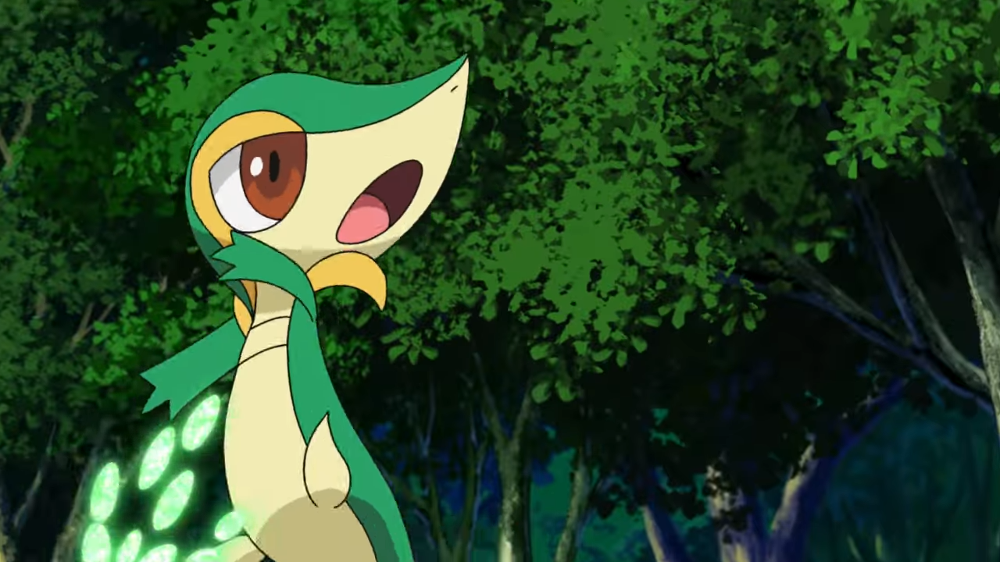

You picked Snivy! This cool Pokemon might seem standoffish, but I believe in your ability to form a real bond with it despite everything. Given that you picked Snivy, a move that you will swiftly learn as you level up, and one which I strongly recommend you make sure to use, is Vine Whip. This might seem weaker than tackle, but due to being the same type as your Pokemon, it actually increases in power by 50 percent, so you should make sure to use it often. Using that move, most of the routes and battles up to Striaton City should be a piece of cake, although I strongly suggest you catch at least one more Pokemon once you can. Be aware, however, that your rival, Cheren, will ambush you with a Tepig! For this fight, you will want to use tackle instead, and use your second Pokemon as well to push you to victory. Furthermore, the upcoming gym is really going to test your mettle by pitting you against a fire type, which your poor Snivy will struggle to confront. To beat this dastardly Pansear, you should first venture to the Dreamyard, to the right of Striaton City, and investigate until you are gifted your key to victory, a Panpour. This water type monkey, a counterpart of Pansear, should make short work of the gym for you, especially if you save it until after the gym leaders first Pokemon. Later on, if you decide to keep this Panpour, you will eventually be able to evolve it not with levels, like with your Oshawott, but with a rare item called a Water stone, which you can use from your bag. Good luck, you up and coming trainer! With the first gym under your belt, you should have a feel for the game, and I am confident you can continue to face future trials on your own. However, if you ever need help, this place should hold all the keys you need to carry yourself to a win. I believe in you!